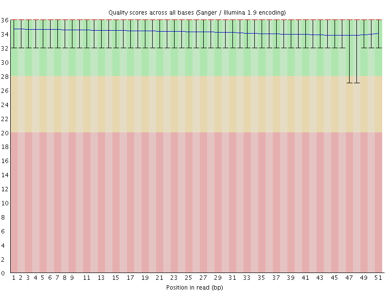
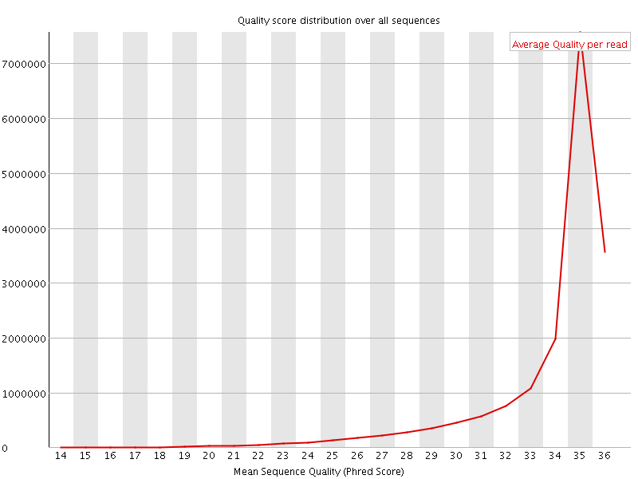
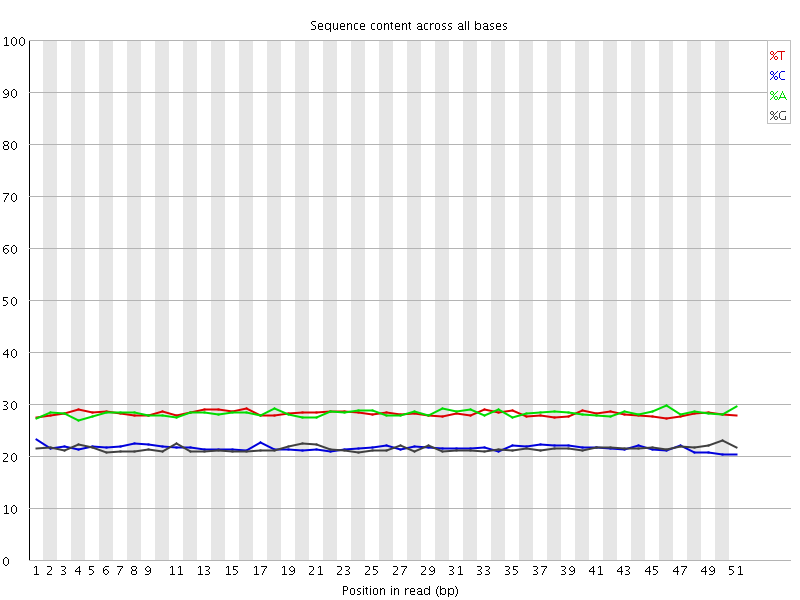
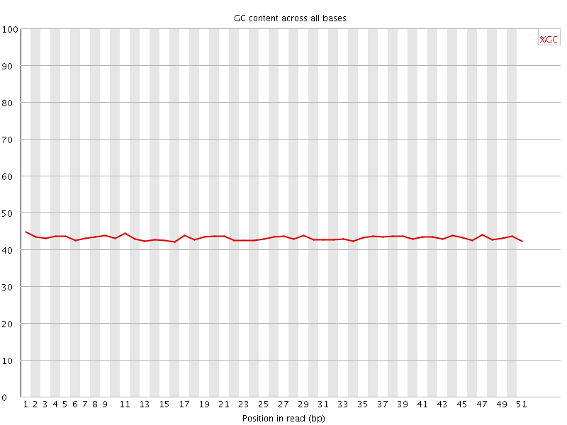
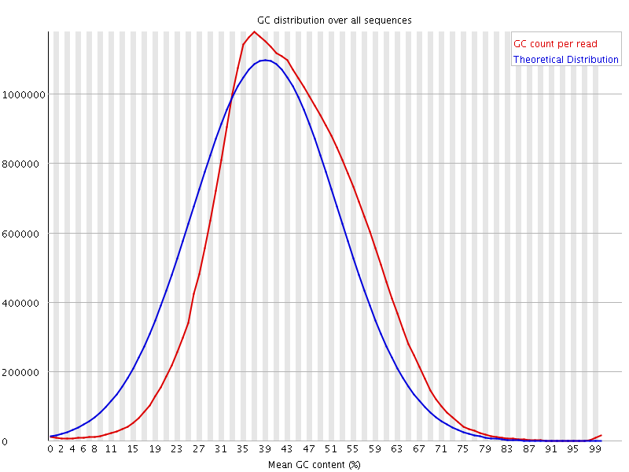
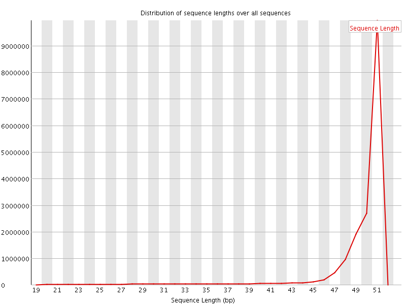
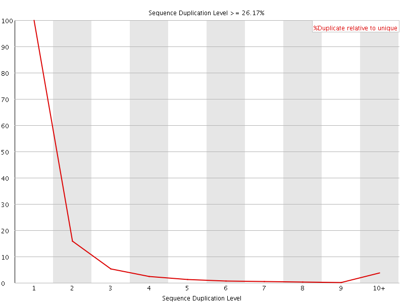
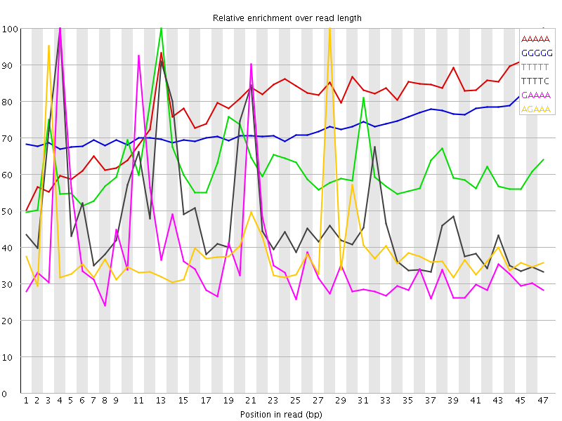

![[OK]](Icons/tick.png) Basic Statistics
Basic Statistics
| Measure | Value |
|---|---|
| Filename | 030-F0_S1_L001_R2_001_trimmed.fq.gz |
| File type | Conventional base calls |
| Encoding | Sanger / Illumina 1.9 |
| Total Sequences | 17535465 |
| Filtered Sequences | 0 |
| Sequence length | 20-51 |
| %GC | 43 |
Per base sequence quality

Per sequence quality scores

Per base sequence content

Per base GC content

![[WARN]](Icons/warning.png) Per sequence GC content
Per sequence GC content

Per base N content

Sequence Length Distribution

Sequence Duplication Levels

Overrepresented sequences
No overrepresented sequences
Kmer Content

| Sequence | Count | Obs/Exp Overall | Obs/Exp Max | Max Obs/Exp Position |
|---|---|---|---|---|
| AAAAA | 6751085 | 4.6393223 | 5.9735355 | 47 |
| GGGGG | 1499785 | 4.097959 | 5.638945 | 47 |
| TTTTT | 5436790 | 3.755499 | 6.088767 | 13 |
| TTTTC | 3579120 | 3.2232566 | 6.667809 | 4 |
| GAAAA | 3494080 | 3.164502 | 8.453924 | 4 |
| AGAAA | 3363250 | 3.0460124 | 7.850111 | 28 |
| CCAGG | 1430630 | 2.9085474 | 5.6013284 | 35 |
| AAGAA | 2789240 | 2.5261457 | 5.4034786 | 2 |
| GGAAA | 1990035 | 2.3753343 | 8.381239 | 20 |
| GAGAA | 1967335 | 2.3482392 | 8.793249 | 27 |
| TTTCC | 1956955 | 2.297698 | 5.102426 | 22 |
| AAAAT | 3260245 | 2.2427456 | 5.9168324 | 22 |
| TCCTC | 1454935 | 2.227149 | 5.8520994 | 24 |
| GGTGG | 1067730 | 2.2159367 | 5.3324423 | 18 |
| ATTTT | 3201985 | 2.2095077 | 5.134264 | 2 |
| CCACC | 1096820 | 2.1866827 | 6.6299624 | 8 |
| TTCCT | 1846930 | 2.168516 | 5.136412 | 23 |
| GAGGA | 1372495 | 2.159068 | 5.0423145 | 2 |
| TGGAA | 1772960 | 2.1184187 | 5.8270974 | 19 |
| TTCAG | 1704220 | 2.018544 | 5.5742097 | 15 |
| TGAAA | 2190065 | 1.9855386 | 6.755046 | 10 |
| CTGAA | 1675505 | 1.9824827 | 8.029712 | 9 |
| TCCAC | 1288865 | 1.9708989 | 5.5743766 | 35 |
| AAATG | 2131245 | 1.9322116 | 6.903216 | 23 |
| CATTT | 2127290 | 1.9137995 | 6.9029336 | 1 |
| AAAAC | 2061940 | 1.8492659 | 6.467394 | 5 |
| GTGGA | 1112150 | 1.7513291 | 6.4953203 | 47 |
| TGAGA | 1457595 | 1.7416053 | 8.106617 | 26 |
| CACCT | 1083915 | 1.6574944 | 5.1242747 | 9 |
| CCACT | 1078905 | 1.6498333 | 5.8251977 | 36 |
| CATGG | 1037050 | 1.617167 | 6.3193765 | 17 |
| CAAGA | 1286705 | 1.5208762 | 5.673842 | 1 |
| AGTGG | 949615 | 1.4953814 | 5.803506 | 46 |
| CATCC | 971245 | 1.4852024 | 5.148081 | 33 |
| AATGA | 1629350 | 1.4771878 | 6.3689857 | 24 |
| ATGGA | 1226105 | 1.4650097 | 5.2643437 | 18 |
| ATGAG | 1206250 | 1.4412861 | 7.7825065 | 25 |
| CACTT | 1221680 | 1.4329163 | 6.875396 | 37 |
| ACTGA | 1206520 | 1.4275726 | 7.311744 | 8 |
| CTTGA | 1201215 | 1.4227654 | 6.366835 | 47 |
| AACTG | 1191990 | 1.4103805 | 7.250913 | 7 |
| AAACT | 1489325 | 1.337093 | 5.850763 | 6 |
| AAATC | 1466700 | 1.3167807 | 6.092074 | 13 |
| AAGTG | 1095140 | 1.3085264 | 5.2986975 | 47 |
| ACTTG | 1090165 | 1.2912333 | 5.385677 | 46 |
| AATCA | 1315230 | 1.1807933 | 5.928501 | 14 |
| CGCCA | 490915 | 0.988339 | 5.1282516 | 28 |
| CCTCG | 438265 | 0.8832532 | 5.3235664 | 25 |
| CTCGC | 426605 | 0.8597543 | 5.0036583 | 26 |
| TCGCC | 416350 | 0.839087 | 5.0023975 | 27 |